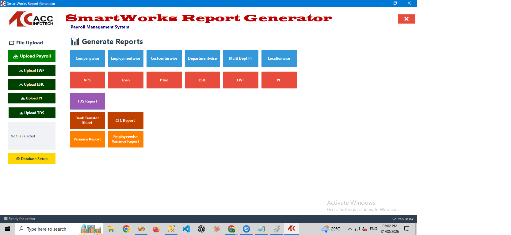
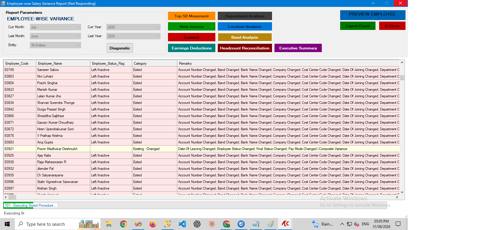
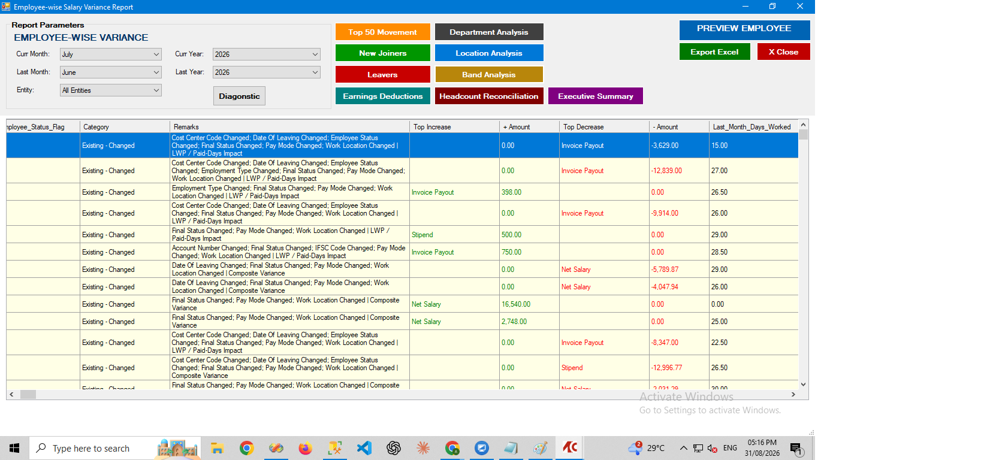
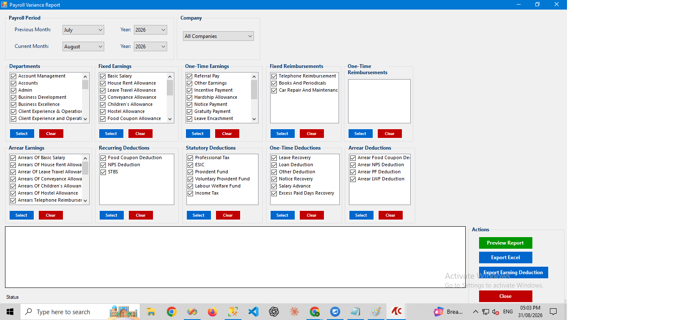

Payroll Variance Analysis Engine
A payroll variance analysis system that compares payroll runs to catch swings before they reach a payslip. Built around a metadata-driven dynamic SQL stored procedure (sp_GeneratePayrollVariance) paired with a VB.NET desktop application (EmpVariance.vb) for review and reporting.
Features
- Metadata-driven dynamic SQL for flexible variance comparisons across payroll periods
- Attendance-stability logic using Days Worked and LOP (loss-of-pay) tracking
- Automatic arrear detection between payroll runs
- Remark-tag system to flag and categorize variance causes
- Optional top-N variance result sets to surface the biggest movers
- Three NPOI-based themed Excel exporters — top movements, new joiners, and exits
Screenshots




Technologies Used
VB.NET (EmpVariance.vb), MS SQL Server (sp_GeneratePayrollVariance stored procedure), NPOI for themed Excel report generation
Challenges & Learnings
The hardest part was making the customised excel report formats, which client wanted.